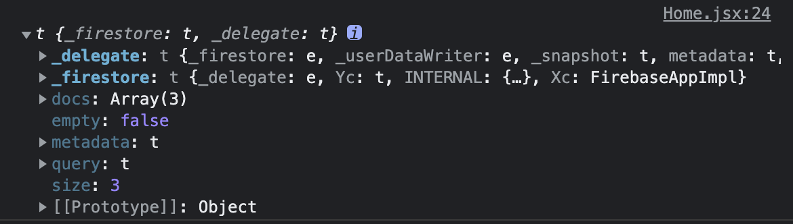
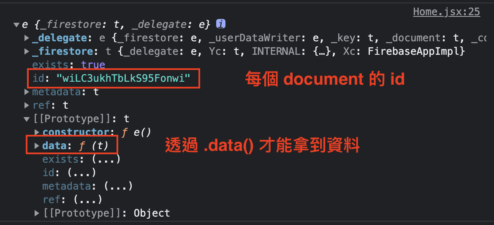

前端神器之一。
簡介
附註：跟操作相關的文件可以參考這裡
Firebase 是 google 提供的一個服務，它讓前端開發者能夠用更簡單的方式來建立「資料庫相關」的後端應用。
它提供了不少服務，參考下面這張圖：
用紅線框起來的部分就是 Firebase 提供的服務，以前端來說很常會用到的有 Authentication 和 Firestore / Realtime Database。
Firestore / Realtime 這兩個資料庫（都是 NoSQL）的差別在於一個是新的，一個是舊的。
基本上新的會比較好上手，所以會目前比較常見的是 Firestore，這篇也會拿它來舉例。
另外做個補充，因為是 NoSQL 的關係，所以跟有些術語跟一般的 SQL 不同，我簡單列幾個：
- DB -> Table -> Row（SQL）
- DB -> Collection -> Document（NoSQL）
基本配置
在你建立好專案跟資料庫以後，就要回到前端的部分來把 React 跟 Firebase 串接起來。
附註：Firebase 目前最新版本是 9，但 8 跟 9 的寫法有些不同，想知道差異的話可以參考 這篇，但總之這邊會以 8 為主。
首先先安裝 Firebase 依賴項目：
1 | npm install firebase @8.5 |
接著設定 config：
1 | import firebase from 'firebase/app' |
雖然只是個設定檔，但我想稍微解釋一下每一段 code 的含義，不然你複製貼上後也不知道這在幹嘛。
import firebase from "firebase/app"
這個是 Firebase 的核心程式，就跟 babel 會有個 babel/core 一樣，所以一定要把他先引進來。
import "firebase/firestore"
前面有說過 Firebase 有提供多種服務，這裡我們要用的是 firestore 這個「資料庫」，所以我們得把這項服務給引入進來。
反之，如果你之後想用其他的服務也是透過這種 firebase/*** 的方式來引入。
const firebaseConfig = {...}
這個就是你在 Firebase 的主控台中會列給你的設定檔，如果忘記的話隨時都可以回去看。
firebase.initializaApp(firebaseConfig)
做一個初始化的動作，可以想成是跟 firebase 做連線的意思。
const db = firebase.firestore()
我們要用的是 firestore 這項服務，所以這邊也要把對它做初始化。
export { db }
firestore 初始化後會回傳一個 Object，簡單來說可以想成是資料庫的 instance，之後要做任何資料的存取都得透過它，所以這邊要把他 export 出去。
懶人包
db.collection(...).get()取得所有 documentdb.collection(...).doc(...).get()取得單一個 documentdb.collection(...).add(doc)新增一筆 documentdb.collection(...).doc(...).update()修改一個 document（部分修改）db.collection(...).doc(...).update({[fieldName]: filedValue.arrayUnion(data)})修改 document（陣列）db.collection(...).doc(...).delete()刪除一個 documentdb.collection(...).doc(...).set()修改一個 document（整筆覆寫）db.collection(...).doc(...).onSnapshot(onNext, onError)取得即時資料（document）db.collection(...).onSnapshot(onNext, onError)取得即時資料（collection）db.collection(...).where('key', 'operator', 'value')設定 querydb.collection(...).orderBy('key', 'desc')排序
附註：
operator可以填的值能參考官方文件
讀取資料
1 | useEffect(() => { |
稍微解釋一下每一段 code 的用途：
db.collection('recipes').get()
透過 .get() 來讀取想要的 collection（非同步）
.then(snapshot => ...)
成功的話會拿到 snapshot，內容如下：

snapshot.forEach(doc =>...)
這邊要特別注意 docs 並不是我們實際要的資料而是 Firebase 的一些東西，所以實際上要先遍歷 docs 陣列，然後再把每個 doc 透過 .data() 來取出資料，所以這邊才會這樣寫。
這邊順便附上每個 doc 的內容：

總之這樣子就可以拿到資料了。
讀取資料（單筆）
1 | const { id } = useParams() |
原本是 db.collection().get()，現在只是在前面多加一個 doc(id) 來指定要哪一個 document。
新增資料
1 | const addNewRecipe = (e) => { |
這個還蠻直接的，就是用 add 來新增這樣。
刪除資料
1 | const deleteRecipe = (id) => { |
就一行而已，不解釋。
修改資料
1 | const updateRecipe = (e) => { |
Firebase 的機制是你傳什麼就改什麼，不會去動到其他欄位。例如說我只有傳 title 的話，那 ingredients、method 和 cookingTime 都會保留下來，不會被覆寫。
Real-Time collection
Firebase 有提供一種取得「即時資料」的方法，叫做 onSnapshot，直接來看 code：
1 | useEffect(() => { |
先介紹 onSnapshot 的部分。他會接收 onNext 和 onError 兩個參數，兩個都是 callback function，簡單來說就是「當資料改變時，幫我取得最新的資料。成功的話執行 onNext，失敗的話執行 onError，夠直覺吧！
所以只要把成功 & 失敗時要做的事情當作 function 傳入就可以達到「real time data」的效果，不管你是從網頁裡的刪除，還是直接到 firebase 刪除，都會自動幫你 trigger onSnapshot。
最後要注意一點是 clean function 的部分。
為了避免當離開元件時還一直在追蹤最新資料，所以必須利用 clean function 來把這個 listener 給清除掉。
清除的方法很間單，在執行 onSnapshot 時會有一個回傳值，是一個 function，這個 function 就是拿來解除 listener 用的，所以我們只需要在 clean function 中去執行它就可以啦！
Real-Time document
既然可以 real-time collection，那有什麼道理不能 real-time document？
1 | useEffect(() => { |
Timestamp
為了在往後拿資料時可以做「排序」，我們通常會在新增 document 的時候附帶「時間戳」的值。
這個時間戳的值不可以直接用 new Date 來存，而是得用 Firebase 提供的 method 來幫建立正確的格式，這樣他才有辦法排序。
這邊會用到一個叫做 Timestamp 的東西來建立時間戳。
首先到 config.js 新增這一段：
1 | import firebase from "firebase/app"; |
接著當要新增時，只要用這種方式就可以了：
1 | const ref = db.collection('collection') |
順道一提，如果是想把 Firebase 的日期轉成 JS 物件後再格式化輸出，可以用 toDate 的方式：
1 | // 假設 dueDate 是 Firebase 的日期物件 |
比較特別的 query
這邊只是想補充一下 query 的部分，一般來說基本的用法是這樣：
1 | db.collection('projects').where('category', '==', 'A') |
用看的應該可以看出來我們要找的是「projects 中 category 為 A」的資料，所以代表資料是這樣：
1 | { |
可是假設現在資料中有個地方是長這樣子的話，該怎麼做才行：
1 | { |
這時候你去查 文件 會告訴你說可以用 array-contains 來處理，不過要注意官方的提供範例是「array of value」，而不是「array of object」。
所以如果要用這種方法的話，就必須在 where(key, 'array-contains', value) 的 value 值填入「整個物件」，以上面的例子的來說就會這樣寫：
1 | db.collection('projects').where('assignedUsers', '==', { |
講成中文就是「把 assignedUsers 這個 array 裡包含這個 Object 的資料拿出來」，這就是這邊下 query 的方式，只是想補充一下，因為這比較特別一些。